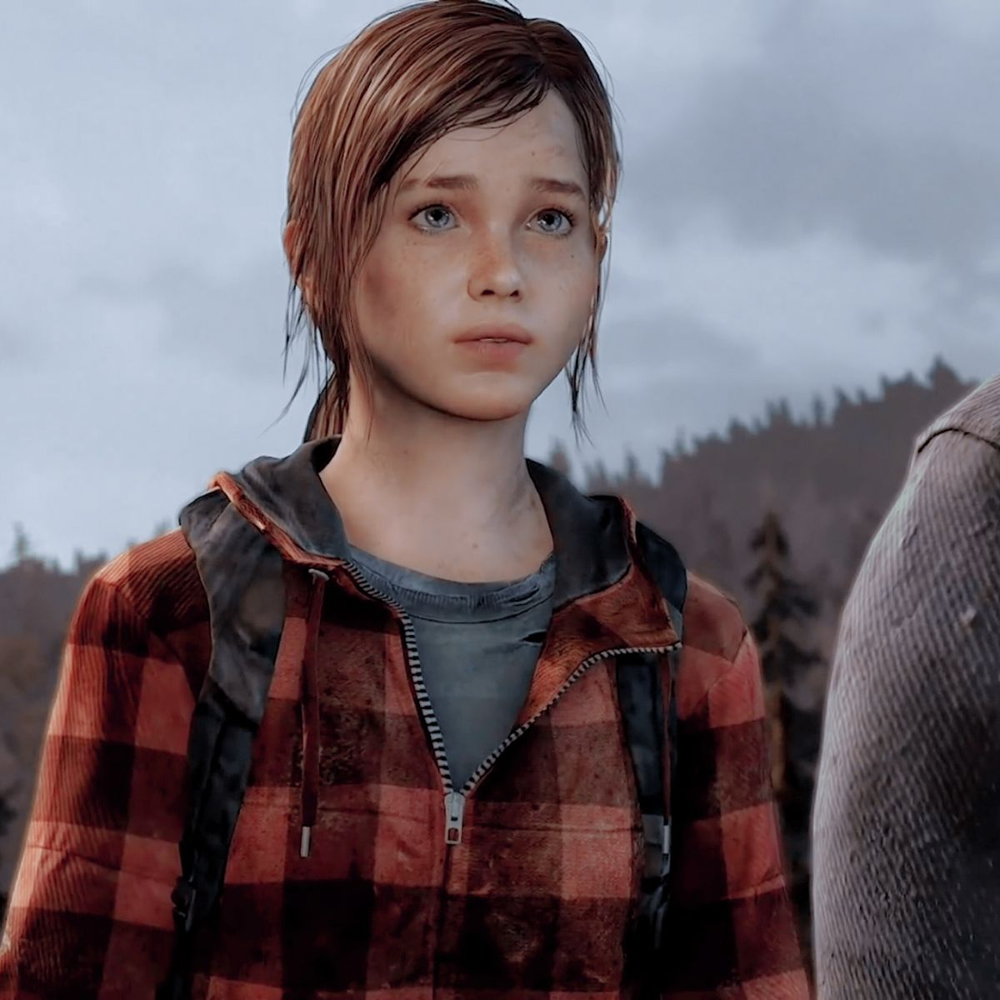

Ellie Williams

- Ellie Williams es una personaje principal de The Last of Us, una saga de videojuegos perteneciente al género del Survival Horror y ambientada en un mundo Post-apocalíptico, siendo ella la protagonista en la secuela del juego original, en el DLC titulado como Left Behind y en el cómic precuela nombrado como American Dreams. Es presentada como una adolescente que nació a principios de la pandemia del Cordyceps y que estuvo cautiva a causa de una cuarentena que era necesaria para su protección, pero tras recibir una visita por parte de su amiga Riley, saldría a escondidas de aquel refugio para pasar el tiempo y divertirse con ella. Durante ese suceso, tanto ella como Riley acaban siendo mordidas durante una pelea contra unos infectados, momento en el que Ellie se daría cuenta de que es la única persona conocida que es inmune al Virus Zombie.